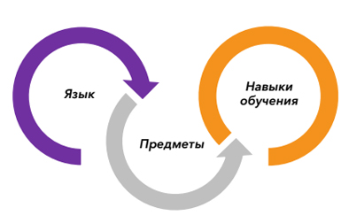

РАСШИРЕННАЯ ПРЕДВУЗОВСКАЯ ПОДГОТОВКА IFP CCN
ЧТО ВАЖНО ЗНАТЬ СТУДЕНТУ ИЗ РОССИИ для успешного обучения на бакалавриате в вузах Китая
ОСОБЕННОСТИ ОБУЧЕНИЯ НА IFP
- 16 студентов в группе на этапе изучения языка
- 25 человек в предметных классах
- учитель-предметник
- учитель языка
- адаптироваться к китайской среде
- в учебной деятельности
- во внеучебной деятельности
Заинтересовала программа?
Оставьте заявку на обучениеСРАВНЕНИЕ ВАРИАНТОВ ПОСТУПЛЕНИЯ в вузы китая на бакалавриат с последующим обучением на китайском языке
(1200 слов)
(1200-2500 слов)
НАПРАВЛЕНИЯ ПОДГОТОВКИ IFP
3 Направления, ведущих к получению востребованной на рынке труда профессии, эксклюзивным грантам и другой финансовой поддержке, а главное - к мировой карьере.
- Бухгалтерский учет и Финансы
- Финансовый менеджмент
- Финансовый инжиниринг
- Электронная коммерция
- Производственный менеджмент
- Бизнес Администрирование
- Маркетинг
- Экономика
- Международная экономика и торговля
- Логистика
- Промышленная экономика
- Мехатронная инженерия
- Наука и инженерия материалов
- Архитектура
- Оптические информационные науки и технологии
- Электротехника и автоматизация
- Электронная информационная инженерия
- Компьютерные науки и технологии
- Биотехнологии
- Биоинженерия
- Наука и технологии защиты окружающей среды
- Математика и прикладная математика
- Химия
- Информационная и цифровая науки
- Все иные инженерные направления
- Китайская история
- Менеджмент туризма
- Международные отношения
- Политика
- Социология
- Журналистика
- Коммуникации
- Китайский язык и литература
- Китайское международное образование
- Переводческое дело
ПРОГРАММЫ ПОДГОТОВКИ IFP
CSP: Специальный китайский
Культура китайского бизнеса
Бизнес
CSP: Специальный китайский
Обзор китайской культуры
Физика
Химия
CSP: Специальный китайский
Обзор китайской культуры
КУРСЫ ПОДГОТОВКИ IFP
Для направлений подготовки Бизнес; Наука и Инженерия
Для направления подготовки Гуманитарные Науки
Заинтересовала программа?
Оставьте заявку на обучениеКУРСЫ ПОДГОТОВКИ IFP
ТРЕБОВАНИЕ ПО УРОВНЮ ОБРАЗОВАНИЯ И КОМПЕТЕНЦИЯМ
- Аттестат об окончании 11 классов
- Средний балл за последний класс и по итоговому аттестату от 80% и выше (* ниже 80% возможно индивидуальное согласование)
- Сдача по итогам 11 класса ЕГЭ по обязательным предметам (Математика и Русский язык)
- Только для направления Наука и Инженерия: изучение физики и химии (базовой или профильной) в 10-11 классах
- Высокий уровень знаний, навыков, мотивации и самоорганизации (мотивационное письмо от ученика)
HSK 3 - Для направлений Бизнес, Наука и инженерия
HSK 2 - Для направления Гуманитарные науки
HSK 4 - Для направлений Бизнес, Наука и инженерия
* Для направления Гуманитарные науки курсы В1 и В2 одинаковы
HSK 4
АЛГОРИТМ ПОСТУПЛЕНИЯ В ВУЗ ПОСЛЕ IFP
-
Февраль - Март
- Первые баллы IFP по итогам 1 семестра
- Справочник для поступления в вузы
- Консультирование студентов IFP по поступлению
-
Апрель, Май, Июнь и Июль
- Предварительные заявки в 3 вуза (Апрель)
- Приглашения от вузов с условиями, на которых студент может быть зачислен в вуз по итогам IFP (Май)
- Итоговые экзамены IFP: заявки в вузы по результатам экзаменов (Июль)
-
Август - Сентябрь
- Официальные приглашения от вузов с финальными условиями, в том числе по распределению грантов
- Выбор каждым студентом1 вуза (Август)
- Начало учебы в выбранном вузе (Сентябрь)
Как будет оцениваться студент предвуза?
- посещаемость
- выполнение заданий и курсовых работ – то есть текущей учебы
- оценок за экзамены.
Доли каждого параметра в общей оценке по предмету на Курсе А:
- Посещаемость: 10%
- Курсовые работы: 20%
- Итоговый Экзамен за 1 семестр: 20%
- Итоговый экзамен IFP: 50%
Доли каждого параметра в общей оценке по предмету на Курсе В и С:
- Посещаемость: 10%
- Успеваемость на занятиях: 20%
- Курсовые работы: 20%
- Итоговый экзамен IFP: 50%
Получается, что 100% посещаемость + 85% успеваемость по курсовым работам + 85% результат сдачи внутренних экзаменов за 1 семестр и столько же за год суммарно дадут 86,5% итоговой успеваемости по предвузу! (100*10%+85*20%+85*20%+85*50%=10+17+17+42,5=86,5%)
По этой же логике, если студент посетил всего 70% занятий, набрал 60% из 100 по курсовым работам и 60 из 100 на экзаменах, он зарабатывает 61 IFP-балл по предмету.
Эта же логика применяется к каждому предмету, и средний балл по предвузу – это среднее значение баллов по каждому предмету.
В чем плюс комплексных оценок?
Это не чисто одна оценка, как наши баллы по ЕГЭ – например, набрал 220 баллов по 3 экзаменам ЕГЭ, и всё, никак уже не добрать до желаемого вуза с проходным баллом в 240. Здесь же у студента всегда есть возможность добрать свои баллы за счет ответственного подхода к учебе. Посещай все занятия, активно занимайся и зарабатывай баллы на уроках, готовься к экзаменам – и ты повлияешь на свои общий средний балл, а значит, на поступление и в том числе на грант.